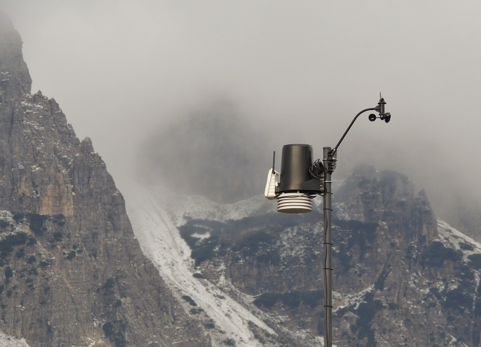

la soluzione definitiva per monitorare e analizzare le condizioni meteorologiche con precisione e affidabilità.
MetIo Pro ti offre un servizio web
che va oltre la semplice lettura di temperatura, umidità e vento,
mettendo a tua disposizione un potente strumento di storicizzazione dei dati
per un'analisi meteorologica avanzata.

Precisione e Affidabilità:
MetIo Pro Pro garantisce letture meteorologiche estremamente precise grazie a sensori di alta qualità. Affidati a dati accurati per prendere decisioni informate.
Storicizzazione Avanzata:
Il nostro sistema avanzato di storicizzazione dei dati ti consente di accedere e esplorare facilmente il passato meteorologico. Analizza le tendenze nel tempo e prendi decisioni basate su dati storici affidabili.
Dashboard Intuitiva:
La nostra dashboard intuitiva offre un'esperienza utente impeccabile. Visualizza tutte le informazioni meteorologiche cruciali in un'unica schermata per una consultazione rapida e chiara.
Strumenti di Analisi Potenti:
MetIo Pro va oltre la superficie, offrendoti strumenti di analisi avanzati. Crea grafici dettagliati, individua modelli e comprendi le dinamiche meteorologiche con facilità.